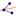
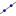
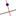
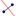
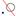
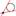

AngleBisector[Point
A, Point B, Point C]: Returns the angle bisector of the angle
defined by points A, B, and C.
Note: Point B is apex of this angle.
AngleBisector[Line g, Line h]: Returns both angle bisectors of the lines.
Note: Also see tool  Angle Bisector
Asymptote[Hyperbola]:
Yields both asymptotes of the hyperbola.
Axes[Conic]: Returns the major and minor axis of a conic section.
ConjugateDiameter[Line, Conic]: Returns the conjugate diameter of the diameter that is parallel to the line (relative to the conic section).
ConjugateDiameter[Vector, Conic]: Returns the conjugate diameter of the diameter that is parallel to the vector (relative to the conic section).
Directrix[Parabola]: Yields the directrix of the parabola.
Line[Point A, Point B]: Creates a line through two points A and B.
Line[Point, Parallel Line]: Creates a line through the given point parallel to the given line.
Line[Point, Direction Vector v]: Creates a line through the given point with direction vector v.
Note: Also see tool  Line through Two Points
MajorAxis[Conic]: Returns the major axis of the conic section.
MinorAxis[Conic]: Returns the minor axis of the conic section.
PerpendicularLine[Point, Line]: Creates a line through the point perpendicular to the given line.
PerpendicularLine[Point, Vector]: Creates a line through the point perpendicular to the given vector.
Note: Also see tool  Perpendicular Line
PerpendicularBisector[Point A, Point B]: Yields the perpendicular bisector of the line segment AB.
PerpendicularBisector[Segment]: Yields the perpendicular bisector of the segment.
Note: Also see tool  Perpendicular Bisector
Polar[Point, Conic]: Creates the polar line of the given point relative to the conic section.
Note: Also see tool  Polar or Diameter Line
Tangent[Point, Conic]: Creates (all) tangents through the point to the conic section.
Tangent[Line, Conic]: Creates (all) tangents to the conic section that are parallel to the given line.
Tangent[Number a, Function]: Creates the tangent to the function at x = a.
Tangent[Point A, Function]: Creates the tangent to the function at x = x(A). Note: x(A) is the x-coordinate of point A.
Tangent[Point, Curve]: Creates the tangent to the curve in the given point.
Note: Also see tool  Tangents